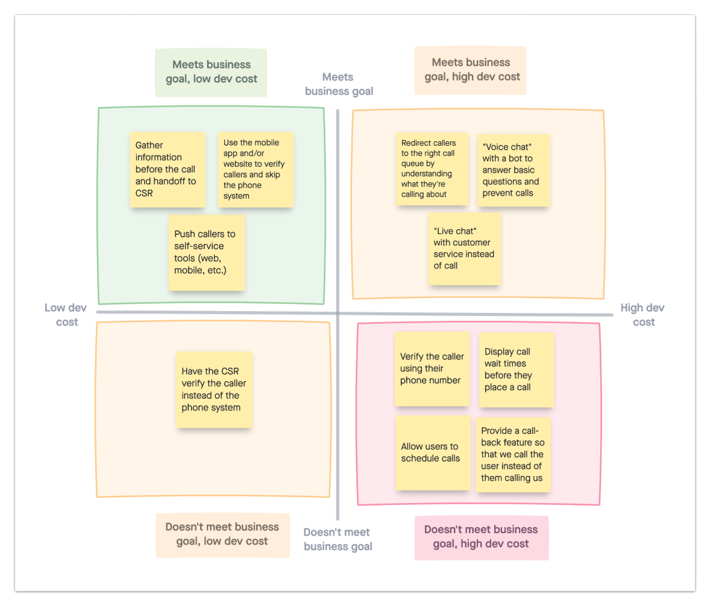

Ideation
Brainstorming as a team
We presented the research findings to the team and brainstormed ways to solve the problem. Using the team's diverse expertise in engineering, business, data, and design, we generated ideas across different directions.

Using the team's diverse expertise (engineering, business, data, etc.) to generate ideas.
Deciding what to build
When deciding what concepts to design and test, the main factors were the business and technical constraints. After analyzing various potential solutions, the team agreed to explore the idea of utilizing our existing mobile app to verify callers and allow them to skip the automated phone system.

Engineering cost vs. business goal, used to evaluate which concepts to explore further.